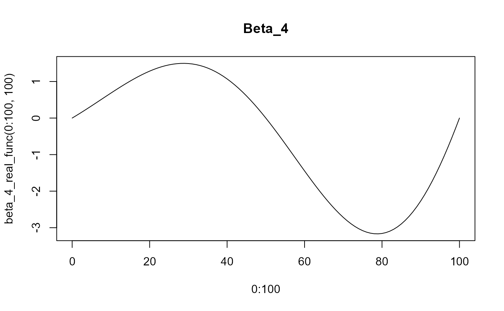

beta_4_real_func
Examples
beta_4_real_func(0)
#> [1] -2.449213e-16
beta_4_real_func(10)
#> [1] 0.682909
beta_4_real_func(10:90)
#> [1] 6.829090e-01 7.517735e-01 8.195517e-01 8.859236e-01 9.505653e-01
#> [6] 1.013150e+00 1.073351e+00 1.130840e+00 1.185291e+00 1.236381e+00
#> [11] 1.283792e+00 1.327210e+00 1.366330e+00 1.400856e+00 1.430501e+00
#> [16] 1.454991e+00 1.474066e+00 1.487480e+00 1.495003e+00 1.496425e+00
#> [21] 1.491554e+00 1.480217e+00 1.462268e+00 1.437580e+00 1.406052e+00
#> [26] 1.367610e+00 1.322206e+00 1.269820e+00 1.210462e+00 1.144170e+00
#> [31] 1.071015e+00 9.910956e-01 9.045458e-01 8.115298e-01 7.122446e-01
#> [36] 6.069196e-01 4.958169e-01 3.792311e-01 2.574888e-01 1.309485e-01
#> [41] 7.777475e-16 -1.349365e-01 -2.734110e-01 -4.149449e-01 -5.590320e-01
#> [46] -7.051399e-01 -8.527116e-01 -1.001167e+00 -1.149903e+00 -1.298300e+00
#> [51] -1.445718e+00 -1.591504e+00 -1.734991e+00 -1.875500e+00 -2.012347e+00
#> [56] -2.144839e+00 -2.272284e+00 -2.393989e+00 -2.509262e+00 -2.617420e+00
#> [61] -2.717788e+00 -2.809704e+00 -2.892521e+00 -2.965612e+00 -3.028371e+00
#> [66] -3.080217e+00 -3.120598e+00 -3.148995e+00 -3.164922e+00 -3.167932e+00
#> [71] -3.157619e+00 -3.133620e+00 -3.095621e+00 -3.043356e+00 -2.976612e+00
#> [76] -2.895230e+00 -2.799110e+00 -2.688210e+00 -2.562548e+00 -2.422209e+00
#> [81] -2.267338e+00
plot(x=0:100, y=beta_4_real_func(0:100, 100), type='l', main="Beta_4")
